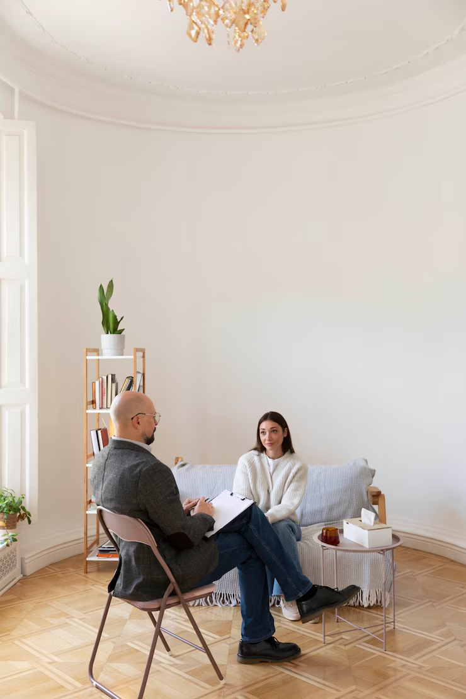

Psicologia Fenomenológico-Existencial · Logoterapia
A Clínica
Na LOGOS Psicologia Clínica, entendemos que a saúde mental é um aspecto fundamental para o bem-estar e a qualidade de vida. Nossa missão é proporcionar um espaço seguro e acolhedor para adultos e crianças que enfrentam desafios emocionais e psíquicos. Aqui, cada paciente é tratado com empatia e respeito, reconhecendo a singularidade de sua jornada.
Oferecemos serviços de psicoterapia, onde profissionais altamente capacitados utilizam abordagens personalizadas para ajudar nossos pacientes a navegar por suas dificuldades, promovendo autoconhecimento e crescimento pessoal. Além disso, realizamos avaliações neuropsicológicas que visam identificar e compreender melhor as necessidades de nossos pacientes, contribuindo para um tratamento mais eficaz.
Para os profissionais da área, disponibilizamos supervisão clínica, um espaço para troca de experiências e aprendizado contínuo, fortalecendo a prática clínica e a qualidade do atendimento.
Na LOGOS, acreditamos que cada passo dado em direção ao cuidado mental é um passo em direção a uma vida mais plena e com propósito. Venha nos conhecer e descubra como podemos apoiá-lo em sua jornada.

Nossos Serviços
Seja para enfrentar desafios emocionais, melhorar relacionamentos ou simplesmente buscar autoconhecimento, o Dr. Saulo Magalhães oferece sessões de psicoterapia personalizadas, tanto presencialmente quanto online. Com uma abordagem empática e fundamentada, cada consulta é uma oportunidade para explorar suas questões e desenvolver estratégias para um propósito de vida.
Além disso, realizamos avaliações neuropsicológicas utilizando instrumentos e testes atualizados e reconhecidos pelo SATEPSI que visam identificar e compreender melhor as necessidades de nossos pacientes, contribuindo para um tratamento mais eficaz.
Profissionais da saúde mental precisam de viver uma formação continuada. O Dr. Saulo Magalhães oferece supervisão qualificada para psicólogos, proporcionando um espaço seguro e ético para discutir casos, refletir sobre práticas e aprimorar habilidades. Juntos, vamos fortalecer sua atuação e garantir que você se sinta confiante em sua prática clínica.
Participe do nosso grupo de estudos e amplie seu conhecimento em Psicologia Clínica. Este espaço colaborativo é ideal para psicólogos e estudantes que desejam discutir teorias, metodologias e práticas atuais. Com encontros regulares, você terá a chance de aprender com outros profissionais e enriquecer sua formação contínua.
Para aqueles que buscam aprofundar seus conhecimentos, oferecemos cursos especializados em Raciocínio Clínico e Psicoterapia. Nossas formações são ministradas com base em conteúdos atualizados e relevantes, capacitando participantes a desenvolver habilidades práticas e teóricas que fazem a diferença na prática clínica.
O Psicólogo
Sou psicólogo clínico com 16 anos de experiência, apaixonado pela jornada do ser humano em busca de autoconhecimento e o propósito da vida. Com mestrado e doutorado em Psicologia Social, dedico minha carreira a entender as nuances das relações humanas e como elas impactam nossa saúde mental.
Minha abordagem é fundamentada na Clínica Fenomenológico-Existencial e na Logoterapia, permitindo que cada sessão seja um convite à reflexão profunda e à descoberta de significados na vida. Além de atender individualmente, também atuo como professor universitário, supervisor e pesquisador em Psicologia Clínica, compartilhando conhecimentos e práticas com futuras gerações de profissionais.
Sou casado há 18 anos e pai de três filhos, o que me proporciona uma rica perspectiva sobre a dinâmica familiar e os desafios que enfrentamos no cotidiano. Aqui, você encontrará um espaço acolhedor, onde juntos poderemos explorar suas questões, tecer reflexões existenciais e promover mudanças significativas.
Vamos iniciar essa jornada juntos?
Onde estamos
No espaço LOGOS Psicologia Clínica, acreditamos que cada pessoa é única e merece um atendimento personalizado. Estamos aqui para apoiá-lo em sua jornada, seja você um paciente em busca de ajuda ou um profissional buscando se aprimorar. Entre em contato e agende uma consulta ou saiba mais sobre nossos serviços. Sua saúde mental e a descoberta do seu propósito de vida é nossa missão.